1、「安裝」→「在此電腦安裝」
2、「授權合約」→「我同意」→「下一步」
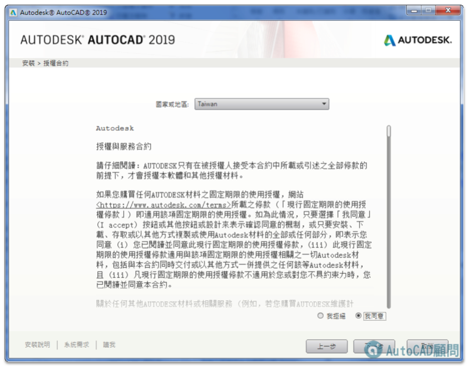
3、「規劃安裝」→「安裝」→「按一下開啟並規劃」
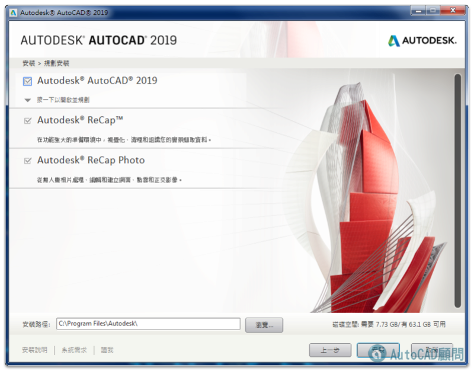
4、「安裝類型」→ 打勾「Express Tools」
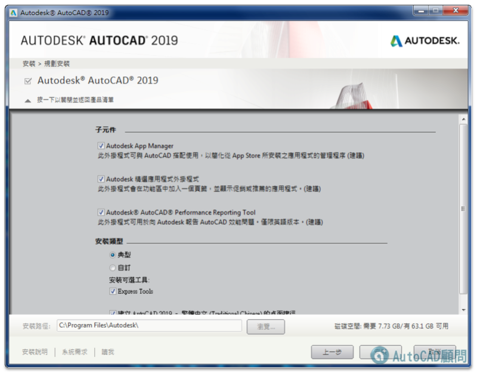
5、「按一下關閉並返回產品清單」→「安裝」
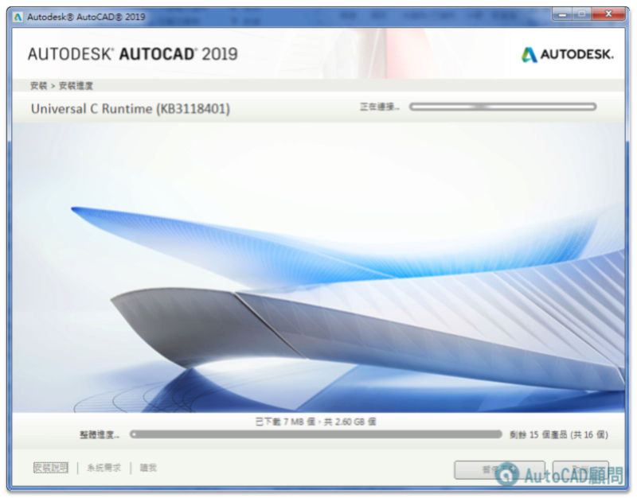
6、「安裝進度」→「安裝中...」
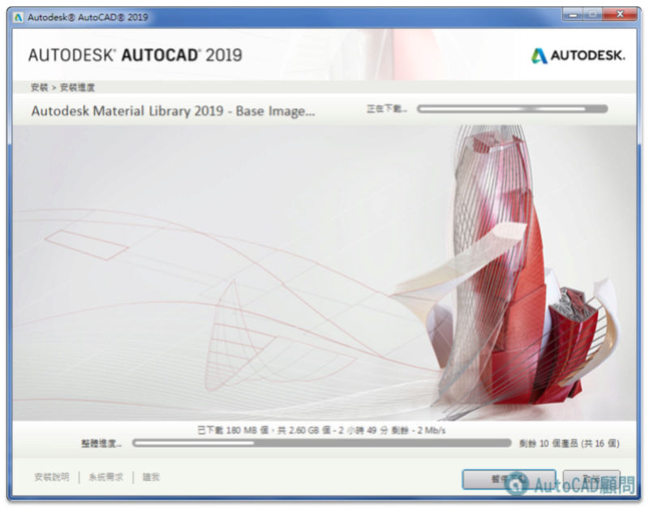
7、安裝完成
8、AutoCAD 2019桌面捷徑
9、移轉自訂設定...(建議取消)
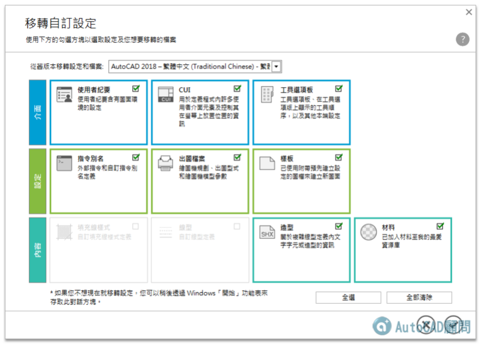
10、「DWG檔與AutoCAD關聯」。（如果沒有出現此畫面，請跳過此步驟）
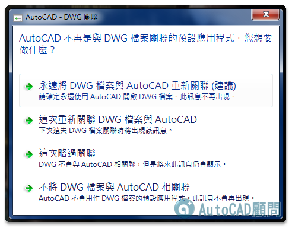
11、「開始使用試用版」
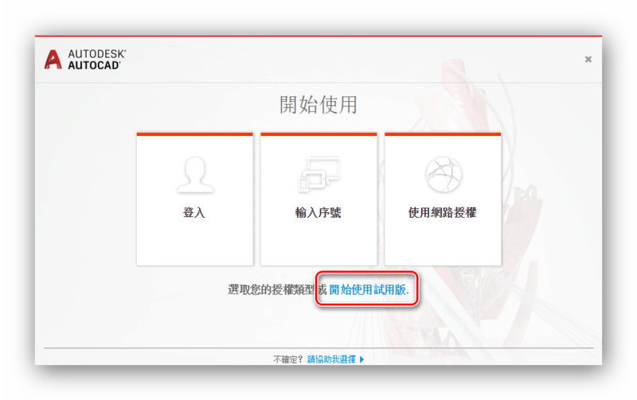
12、「登入Autodesk帳戶」
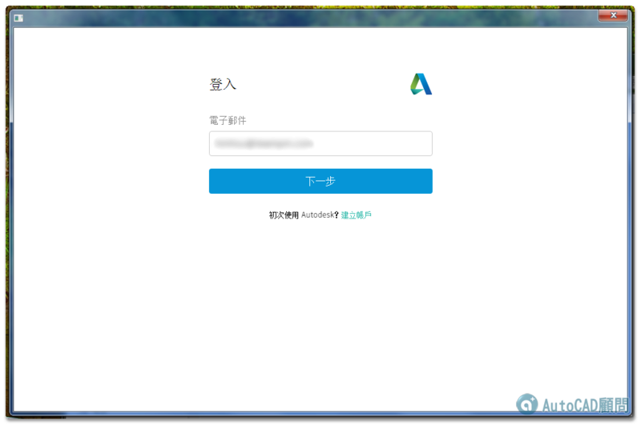
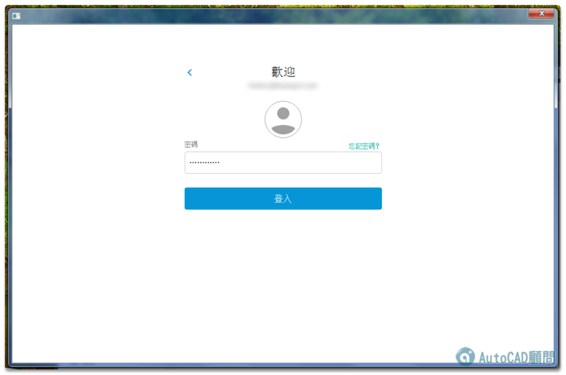
13、AutoCAD 2019開啟中...
14、「說明和歡迎畫面」→「30天試用期」
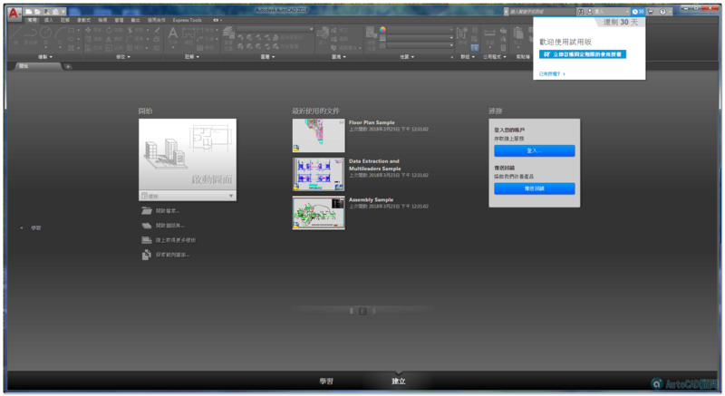
注意：試用版必須連上網路及登入autodesk帳戶才可試用。
15、AutoCAD 2019 初始畫面
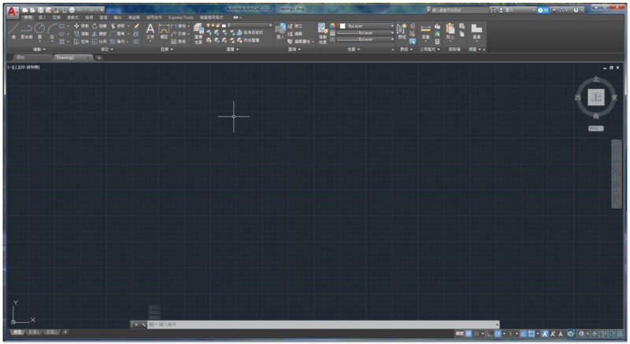